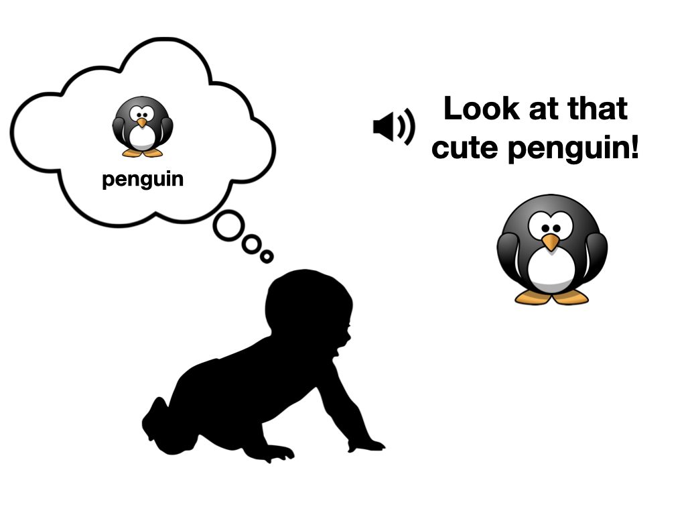
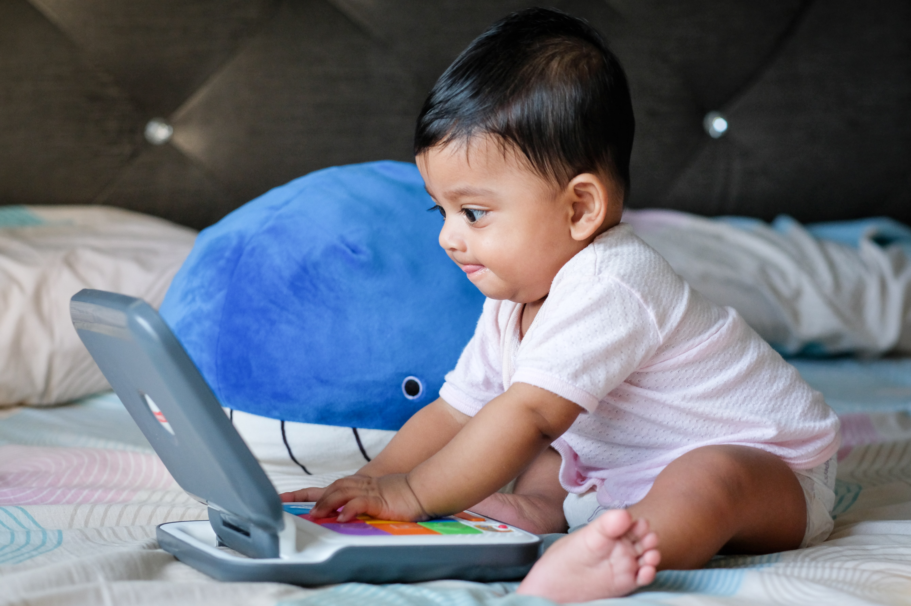
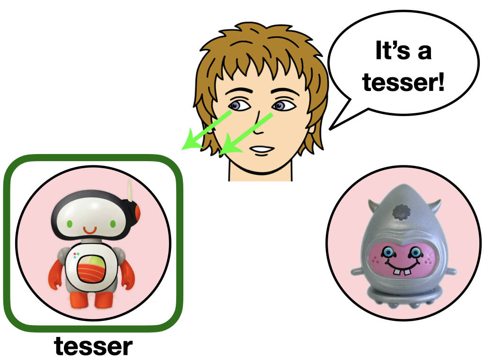
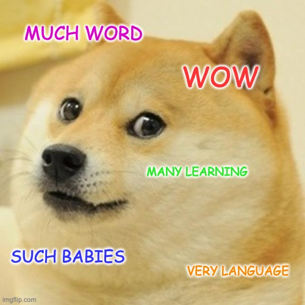

<!doctype html>
<html>

<head>
  	<meta name="viewport" content="width=device-width, initial-scale=1.0, maximum-scale=1.0, user-scalable=no" >
  	<script src="js/jquery.min.js"></script>
	<script src="js/jquery-ui.min.js"></script>
  	<script src="js/snap.svg-min.js"></script> 
  	<script src="js/jspsych.js"></script>
	<script src="plugins/jspsych-instructions.js"></script>
  	<script src="jspsych-learning.js"></script>
	<script src="jspsych-learning-prompt.js"></script>
	<script src="jspsych-production-test-singlepic.js"></script>
	<script src="jspsych-comprehension-test-prompt.js"></script>
	<script src="jspsych-comprehension-test.js"></script>
	<script src="jspsych-comprehension-test-prompt-2.js"></script>
	<script src="jspsych-comprehension-test-2.js"></script>
	<script src="jspsych-image-test-2.js"></script>
	<script src="jspsych-selection-learning.js"></script>
	<script src="jspsych-audio-check.js"></script>
  	<script src="plugins/jspsych-button-response.js"></script>
  	<script src="plugins/jspsych-survey-text.js"></script>
	<script src="jspsych-production-test-singlepic.js"></script>
    <link rel="stylesheet" href="css/jspsych.css"></link>
	<link rel="stylesheet" href="css/jquery-ui.css"></link>
    <link rel="stylesheet" href="css/crossact.css"></link>
</head>

<body>
  <div id="jspsych-target"></div>
</body>
<script>

// start with a general instruction

var trial = {
type: 'instructions',
pages: [
  'Welcome! This website will show you some of the <b>strategies babies use to learn new words</b>. <p style="text-align:center;"></p>Babies learn thousands of words over their first few years of life. On average, they are learning multiple words per day! How do they do it? <br><br>There is probably not one single answer to this question. Babies use <u>many</u> different strategies and types of information to learn about word meanings. <br><br> In the next few pages, <b>we will show you three word learning strategies</b>. For each strategy, you will have a chance to guess new word meanings - can you learn as well as a baby? <br><br>It will take about 3-5 minutes to click through the examples. Click NEXT to get started!',
],
show_clickable_nav: true
}
var timeline=[];

timeline.push(trial);


// MUTUAL EXCLUSIVITY
var me_test = {
	type: 'image-test-2',
	image1: "stims/penguin.png",
	image2: "stims/6.png",
	cue_image: "stims/woman_me.jpeg",
	question1: "Imagine you see the two animals below - a bird-like animal and a strange alien.", 
	question2: "Now, you hear an adult say the word noopy. Which of the two animals is the noopy?",
	question3: "Click on the animal that you think is the noopy!",
	label: "noopy",
	targetLocation: 1,
	targetImage: "stims/6.png"
};

timeline.push(me_test);

// SOCIAL CUE TRIALS

var soc_test = {
	type: 'image-test-2',
	image1: "stims/12.png",
	image2: "stims/10.png",
	cue_image: "stims/eyes_down_left.jpeg",
	cue_image_size: [172,200],
	cue_image_pos_x: 350,
	question1: "Next, imagine that the person below said the word tesser.", 
	question2: "Can you figure it out which of the two aliens they are talking about?",
	question3: "Click on the tesser!",
	label: "tesser",
	targetLocation: 0,
	targetImage: "stims/12.png"
};

timeline.push(soc_test);

var soc_instructions = {
	type: 'instructions',
	size: 400,
	pages: [
		'If you guessed that the alien on the left is the tesser, you guessed right!'+"<br>"
        +'Babies can use <b style="font-size:20px">'+"social cues" +'</b> -- e.g., where someone is looking -- to guess the meaning of new words.'
		+'<p style="text-align:center;"></p>'
		+'Click NEXT to learn about another way that babies can learn new words.'
        ],
	show_clickable_nav: true
};

timeline.push(soc_instructions);

// CROSS_SITUATIONAL TRIALS

var stat_instructions = {
	type: 'instructions',
	size: 400,
	pages: [
		'The next strategy babies can use is by paying attention to how different words and objects. go together. This means that babies need to <b>track statistics</b> between words and what people are talking about.'+"<br><br>"
        +'For this next part, you will see different aliens appearing with different words. See if you can figure out the names of the different aliens. <b> Make sure your audio is turned on before starting.</b> <br><br>'
		+'Click NEXT to start learning!'
        ],
	show_clickable_nav: true
};

timeline.push(stat_instructions);

trainingList=[];
	
var prompt = {
	type: 'learning-prompt',
	location1: "left",
	location2: "right",
	im1: "stims/2.png",
	im2: "stims/3.png",
	question: "Click on the START button to hear the alien names. Make sure your audio is turned on!",
	choices: ['START']
};
		
trainingList.push(prompt);

var trial = {
	type: 'learning',
	location1: "left",
	location2: "right",
	im1: "stims/2.png",
	im2: "stims/3.png",
	label1: "guffi",
	label2: "finna",
	audio1: "stims/guffi.m4a",
	audio2: "stims/finna.m4a",
	audio: "true"
 };

trainingList.push(trial);

var prompt = {
	type: 'learning-prompt',
	location1: "left",
	location2: "right",
	im1: "stims/3.png",
	im2: "stims/5.png",
	question: "Click on the START button to hear the alien names. Make sure your audio is turned on!",
	choices: ['START']
};
		
trainingList.push(prompt);

var trial = {
	type: 'learning',
	location1: "left",
	location2: "right",
	im1: "stims/3.png",
	im2: "stims/5.png",
	label1: "guffi",
	label2: "leemu",
	audio1: "stims/guffi.m4a",
	audio2: "stims/leemu.m4a",
	audio: "true"
 };

trainingList.push(trial);

var prompt = {
	type: 'learning-prompt',
	location1: "left",
	location2: "right",
	im1: "stims/3.png",
	im2: "stims/7.png",
	question: "Click on the START button to hear the alien names. Make sure your audio is turned on!",
	choices: ['START']
};
		
trainingList.push(prompt);

var trial = {
	type: 'learning',
	location1: "left",
	location2: "right",
	im1: "stims/3.png",
	im2: "stims/7.png",
	label1: "kita",
	label2: "guffi",
	audio1: "stims/kita.m4a",
	audio2: "stims/guffi.m4a",
	audio: "true"
 };

trainingList.push(trial);

var testList=[];

var test_prompt = {
	type: 'comprehension-test-prompt-2',
	image1: "stims/2.png",
	image2: "stims/3.png",
	label: "guffi",
	targetLocation: 1,
	targetImage: "stims/3.png",
	choices: ['START']
};

var test = {
	type: 'comprehension-test-2',
	image1: "stims/2.png",
	image2: "stims/3.png",
	label: "guffi",
	targetLocation: 1,
	targetImage: "stims/3.png"
};

testList.push(test_prompt);
testList.push(test);
	
var crossit_trials=trainingList.concat(testList);

var timeline=timeline.concat(crossit_trials);


//debrief and code message
var experimentFinal = [];
var final_instructions = {
	type: 'instructions',
	size: 400,
	pages: [
		'Great job! You learned a few different strategies that babies use to learn new words:'
        +"<br>"+"<br>"
		+'<ol>'
        +'<li><center><u><b style="font-size:20px">'+"mutual exclusivity" +'</b></u></center></li>'
        +'<li><center><u><b style="font-size:20px">'+"social cues" +'</b></u></center></li>'
        +'<li><center><u><b style="font-size:20px">'+"tracking statistics" +'</b></u></center></li>'
		+'</ol>'
        +"<br>"
        +'<center>Email us if you have any questions or would like to know more about how babies learn words:</center>'
		+'<center>martincz@princeton.edu</center>'
		+'<p style="text-align:center;"></p>'
        ],
	show_clickable_nav: false
};

//add instructions trial to experiment
experimentFinal.push(final_instructions);

//timeline=testList;


// PRELOADING
// this should be handled within the plugins, but I've gotten mixed results relying on this,
// so to be extra sure, preload all relevant files prior to starting the experiment

 
//preload all images
var imageSet = ["stims/woman_me.jpeg","stims/soc_cues.jpeg","stims/penguin.png","stims/dogeword.jpeg","stims/penguin_word.jpeg","stims/2.png","stims/3.png","stims/6.png","stims/5.png","stims/7.png","stims/10.png","stims/12.png"];

//preload audio (if audio gets added at some later point)  
var allAudio = [];
wordItems = ["guffi","finna","leemu","noopy","kita","tesser"]
for (var i = 0; i < wordItems.length; i++) {
	allAudio.push("stims/"+wordItems[i]+".m4a")
};
 
//function for tracking loading of audio files
//useful if there are a lot of audio files 
function updateLoadedCount(nLoaded){
     var percentcomplete = nLoaded / allAudio.length * 100;

     // could put something fancier here, like a progress bar
     // or updating text in the DOM.
     console.log('Loaded '+percentcomplete+'% of audio files');
 }

//run this line instead if we add audio
jsPsych.pluginAPI.preloadImages(imageSet, function(){ jsPsych.pluginAPI.preloadAudioFiles(allAudio, function() {startExperiment(); },function(nLoaded) { updateLoadedCount(nLoaded); });});

//jsPsych.pluginAPI.preloadImages(imageSet, function() {startExperiment();});
  
  
// START & RUN EXPERIMENT
// including unctions that handle storing the data

//function for Javascript-PHP communication
function saveData(filename, filedata){
	$.ajax({
		type:'post',
		cache: false,
		url: 'save_data.php', // this is the path to the PHP script for storing the data
		data: {filename: filename, filedata: filedata}
	});
};

//function to initialize the experiment; will be called once all images are preloaded
function startExperiment(){
	jsPsych.init({
		display_element: $('#jspsych-target'),
		timeline: timeline,
		show_progress_bar: true,
		fullscreen: true,
		default_iti: 0,
		on_finish: function(data) {
			//for testing: display data and store locally
			//jsPsych.data.displayData("csv");
			//jsPsych.data.localSave("CrossPC_"+subject_id+".csv", "csv");
			//below script is for storing data locally once the experiment is online
			//saveData("Crossact_"+subject_id+".csv", jsPsych.data.dataAsCSV());
			
			//add final instructions after data has been stored
            jsPsych.init({
                         display_element: $('#jspsych-target'),
                         timeline: experimentFinal
			});
		}
	});
};
  
  
</script>

</html>